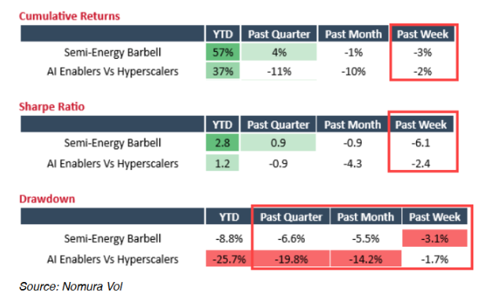
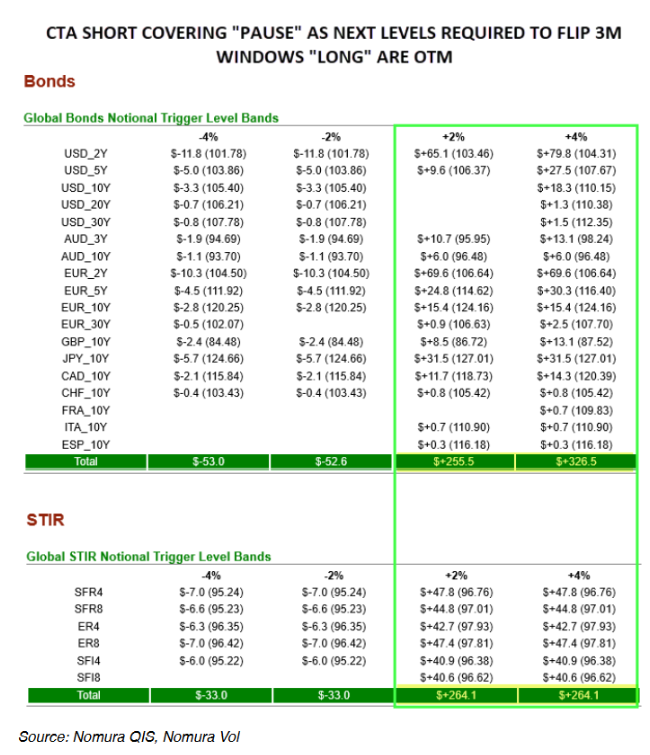
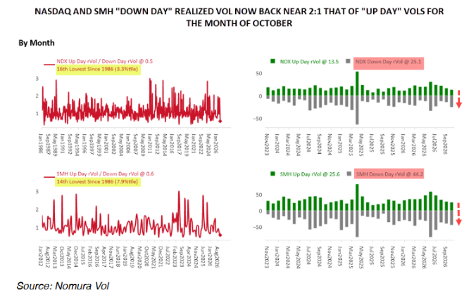
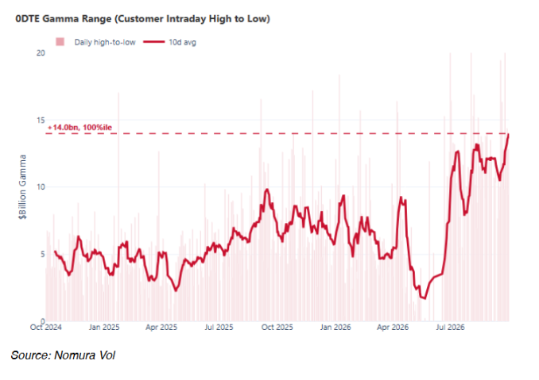

AI投资叙事正面临自身逻辑的内在矛盾。市场对超大规模云计算厂商资本开支路径的判断，已从此前的"正面无论如何都赢"演变为当前的"两害相权"困境——加速则自由现金流承压，减速则需求前景存疑，两条路均指向AI相关资产遭到抛售。
追风交易台消息，10月23日，据野村证券跨资产策略Charlie McElligott报告中指出，过去一周，AI生态系统内的负面情绪催化剂接连涌现，叠加此前9月"智能体热"行情中积累的多头仓位，市场经历了大规模的被迫平仓。
仅在最剧烈的单日抛售中，野村监控的124个美股多空配对中，有47个出现逾3个标准差的单日波动，6个触及5个标准差以上的极端偏离。
此次震荡不仅冲击了AI核心概念股，更通过拥挤仓位的连锁平仓，向美债、汇率及大宗商品市场蔓延，触发了跨资产范围的系统性去杠杆。
下周市场将迎来超大规模厂商财报密集披露窗口，包括谷歌、亚马逊、微软，叠加美联储议息会议，市场方向将在短期内面临关键检验。
资本开支的"囚徒困境"
AI交易的核心叙事，已从此前"正面结果全面利好"的单边逻辑，急剧切换至"怎么看都是利空"的双向困境。
McElligott在报告中将这一处境描述为"任选其一都是毒药"：
其一，若超大规模厂商资本开支继续加速。正如Meta最新财报所揭示的趋势，市场将高度聚焦于自由现金流的持续消耗，并进一步质疑整体融资可持续性。
这一路径具有非线性风险，意味着需以更大规模、更高利差发行债务，AI交易因"不可持续"叙事而承压。
其二，若超大规模厂商资本开支出现实质性减速，则意味着市场此前已定价的"最优情景"，涵盖AI需求、技术采用、盈利能力及终端用户生产率提升等核心论题正在失守，AI交易将面临更为猛烈的冲击。
这一困局的形成，与9月"智能体概念"行情期间多头仓位的快速重建高度相关。彼时大量资金涌入AI核心标的，并伴随着规模可观的看涨期权投机性建仓，为后续的踩踏式出逃埋下伏笔。
止损触发引发跨市场去杠杆
仓位拥挤是本轮波动异常剧烈的核心原因。
据野村交易台数据显示，在最剧烈的单日抛售中，共有124个美股多空配对触发止损，其中47个配对的波动幅度超过正负3个标准差，26个配对超过正负4个标准差，6个配对超过正负5个标准差。


McElligott认为，本轮止损潮的根源在于，2026年全年"高夏普比率交易"高度集中，套息策略与趋势跟踪策略长期共振，形成罕见的广谱赢家效应。
而当前时点恰逢四季度末，基金经理面临年末业绩压力，在已然承压的回撤环境下，主动出击博取反弹的动力远不及"保住资本、安全越年"的避险本能——"去风险、关仓位"模式主导了市场行为。
与此同时，AI叙事的重置正在加速系统性趋势策略的仓位调整，尤其集中于此前极为拥挤的美国国债及短期利率空头。
据野村QIS数据，过去两周，CTA趋势策略已平仓约680亿美元的美债期货空头及380亿美元的短期利率期货空头，但信号仍处于净空头状态，意味着若债市涨势延续，潜在的被迫回补规模依然可观。


McElligott认为，随着短期窗口的回补基本完成，债券空头的挤压动能正在阶段性停歇。2周及1个月周期模型均已翻转为"做多"信号，但3个月周期模型若要从当前水平翻转做多，仍需债券价格出现大幅进一步上涨。
宏观共振：债券与股市的相关性切换
此次AI叙事重置，同步触发了债市与股市内部的相关性结构变化，这一信号在市场机制层面值得关注。
债券方面，"股债负相关"保护属性重新显现。McElligott指出，大量资金于前一交易日通过股票期货抛售与国债期货买入完成资产配置切换，债券再度扮演风险对冲工具的角色。
这一特征贯穿全年的大部分时间后曾一度失效，如今伴随"增长恐慌"情景的信用度上升而回归。
股票市场则出现方向相反的切换。2026年大部分时间内，纳斯达克及半导体板块呈现罕见的"上涨日波动率高于下跌日"特征；而当前，这一关系已重新反转为"负向现货-波动率相关性"，即股价下跌时波动率更大。
这一切换在纳斯达克及SMH（半导体ETF）空间最为突出，直接反映了市场对AI资本开支可持续性的重新定价。


值得注意的是，标普500整体指数层面的VIX波动相对温和。McElligott将此归因于"反向离散"效应——科技多头遭受重创，而利率敏感型板块及其他空头标的则急剧反弹，两相对冲使得指数层面的整体相关性并未爆发式上升。
大额期权信号：逆势资金仍在布局AI反弹
尽管整体情绪承压，期权市场中仍出现了若干值得关注的逆势布局信号，主要体现在部分核心AI名称的看涨期权上。
据McElligott的观察，过去一周内出现了以下显著的看涨期权买入活动：
- CoreWeave合计支付权利金约6900万美元，涉及期权名义敞口约1.7亿美元；
- Nebius Group合计支付权利金约2570万美元，涉及名义敞口约8000万美元；
- 美光合计支付权利金约2000万美元，涉及名义敞口约8500万美元。
上述交易涉及2025年3月至4月到期的价外看涨期权，显示出部分资金在当前动荡中仍维持对AI板块中期反弹的方向性押注。
对于潜在的企稳条件，McElligott认为关键在于波动率风险溢价（VRP）卖方是否愿意遵循历史规律"逢波动率上涨做空"，尤其是0DTE Gamma卖出策略在买入下跌、卖出上涨方面的稳定器作用，将是判断波动率能否再度收敛的重要观察指标。


~~~~~~~~~~~~~~~~~~~~~~~~
以上精彩内容来自追风交易台。
更详细的解读，包括实时解读、一线研究等内容，请加入【追风交易台▪年度会员】